地政学
デンバーはロッキー山脈の東麓で西部、平原、山岳州を結ぶコロラド州都である。連邦機関、州政府、軍事関連、空港、エネルギー政策が集まり、太平洋岸と中西部の間で水、土地、交通、気候を調整する結節点です。

🇺🇸 アメリカ合衆国 / 北米 / World City Atlas
ロッキー山脈の東麓、平原と高地が出会うコロラド州都。エネルギー、テック、航空物流、アウトドア文化、急成長する住宅市場、水資源、先住民の記憶が重なる都市です。
都市の骨格
デンバーはロッキー山脈を背にした高地の州都であり、鉱業の記憶、鉄道、空港、郊外道路、成長する知識産業を平原側へ広げてきた。山を眺める街は、同時に水と住宅の限界を意識する街でもある。
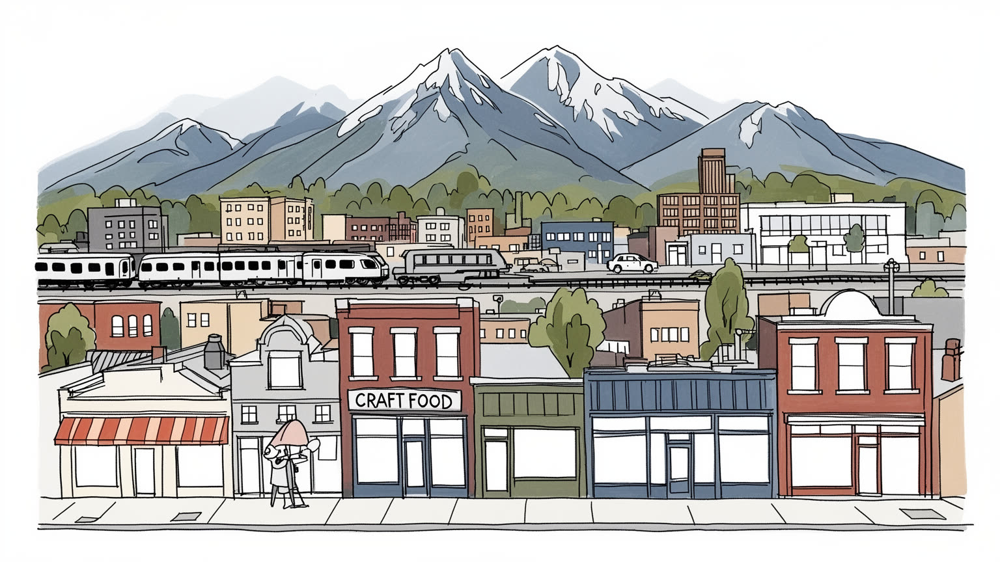
デンバーはロッキー山脈の東麓で西部、平原、山岳州を結ぶコロラド州都である。連邦機関、州政府、軍事関連、空港、エネルギー政策が集まり、太平洋岸と中西部の間で水、土地、交通、気候を調整する結節点です。
州政、医療、大学、エネルギー、テック、航空宇宙、通信、観光が雇用を厚くする。高賃金の専門職が増える一方、建設、配送、飲食、ホテル、清掃、介護の労働が成長を支え、家賃上昇が働き手を遠ざける現実もある。
先住民の記憶、ヒスパニック文化、カトリック教会、福音派、移民の礼拝、音楽、スポーツ、醸造所文化が重なる。山に向かう余暇の明るさの下で、土地の歴史と多様な信仰が都市の公共性を作る。地域祭も今に残る。
観光客は山岳、博物館、球場、醸造所、レッドロックスを巡るが、住民には住宅費、通勤、水不足、ホームレス、薬物依存、雪の日の移動が切実である。晴れた高地の魅力と成長の負担を同時に読む街だ。日常も重い。
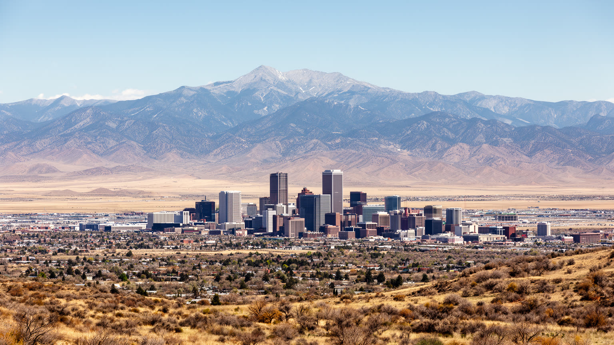
デンバーを読む入口は、ロッキー山脈の東麓に置かれた高地都市という位置である。海抜一マイルの標高は都市の愛称になり、晴天の多さ、薄い空気、強い日差し、急な雪、乾いた風を日常にする。市街は山中ではなく平原側に広がり、サウスプラット川とチェリークリークの合流、鉄道、幹線道路、郊外開発が都市の骨格を作ってきた。西を見れば山脈が近く見えるが、実際の生活圏は東西南北へ長く伸び、通勤、住宅価格、水道、学校区、自治体境界が日々の行動を細かく分ける。山は観光と余暇の象徴である一方、雪解け水、森林火災、道路閉鎖、週末渋滞、山岳地の住宅開発を通じて都市に戻ってくる。平原に広がる都市は土地が無限にあるように見えるが、乾燥地の水、農地、自然保護、交通排出が成長の上限を知らせる。デンバーの地形は、山を眺める美しさと、平原へ膨張する都市の実務を同時に抱える。山脈と市街の距離を測ることは、景観だけでなく、資源、移動、災害、生活費の関係を測ることでもある。西の斜面で起きる火災や積雪の変化は、空気の質、保険、観光収入、水の配分を通じて中心部まで届く。高地の明るさは都市の魅力だが、その明るさを支える自然条件は脆く、計画の精度を求めている。東の平原へ視線を戻すと、倉庫、住宅地、牧草地、空港が広がり、山だけでは語れない都市圏の厚みが見える。
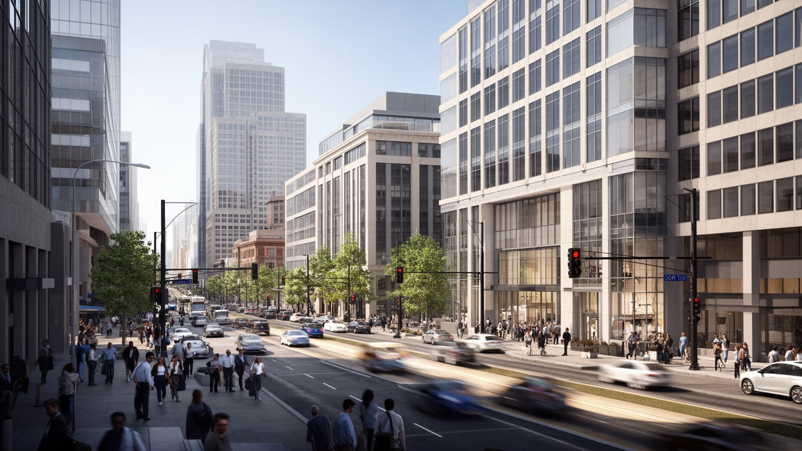
デンバーの経済は、鉱業とエネルギーの歴史を背負いながら、テック、通信、航空宇宙、医療、金融、専門サービスへ広がっている。コロラド州は石油、天然ガス、鉱物、再生可能エネルギーをめぐる政策の舞台であり、デンバーには企業本社、法律、会計、地質調査、環境コンサルティング、州政府の規制機能が集まる。化石燃料産業は雇用と税収を生む一方、排出削減、土地利用、先住民や農村部の権利、気候リスクと向き合う必要がある。近年はクラウド、ソフトウェア、通信、宇宙関連、データ分析の仕事が増え、若い専門職を引き寄せてきた。こうした成長はダウンタウンや郊外のオフィス、大学、研究機関、空港接続に支えられるが、清掃、警備、配達、飲食、建設、保育の労働なしには動かない。高賃金職が都市の消費と住宅需要を押し上げるほど、サービス労働者や公務員の住まいは遠くなる。デンバーを産業都市として読むには、山岳の自由なイメージだけでなく、エネルギー転換の政治、テック企業の採用、電力網、労働資格、家賃負担を同じ問題として見る必要がある。経済の強さは新しい企業数だけでなく、資源依存からの移行をどれだけ公平に進められるかで測られる。油田とデータセンター、研究室と建設現場を一つの労働市場として見ると、成長の利益と負担がより具体的に見えてくる。州都の政策判断も企業の投資速度を左右する。
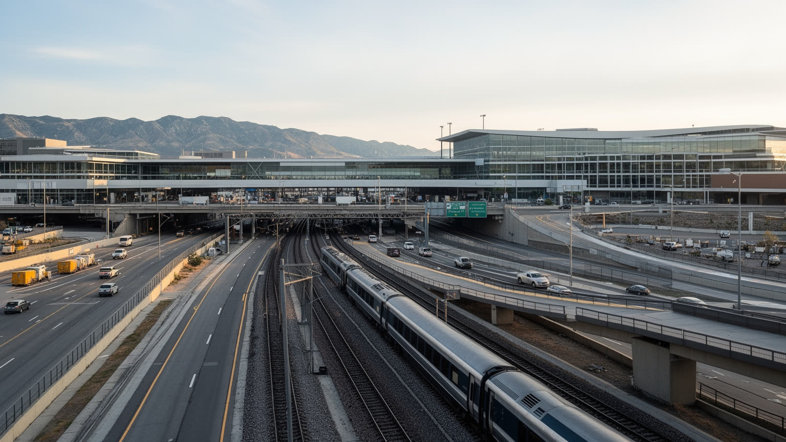
デンバー国際空港は、内陸都市であるデンバーを北米と世界へ開く巨大な装置である。広大な敷地、長い滑走路、乗り継ぎ機能、貨物、レンタカー、ホテル、鉄道連絡は、都市圏の経済と日常移動を大きく支える。西部山岳州と中西部、太平洋岸、南部を結ぶ位置は、航空会社にとっても物流企業にとっても意味がある。空港は観光客やビジネス客を運ぶだけでなく、医薬品、部品、郵便、電子商取引、会議、スポーツ遠征を動かす。鉄道で中心部と結ばれていることは重要だが、多くの住民は郊外道路、バス、自動車に依存し、通勤の長さや渋滞が生活時間を削る。ライトレールやバス網は都市の骨格を補う一方、郊外の低密度開発をすべて支えるには限界がある。雪の日や山へ向かう週末には、道路の脆さと交通需要の集中が見えやすい。デンバーの交通を読むには、空港の華やかさだけでなく、早朝に空港で働く清掃員、倉庫労働者、遠い住宅地から通う介護職、車を持たない若者、高齢者の移動を同じ地図に置く必要がある。都市圏が広がるほど、公共交通、歩行者、自転車、住宅配置を一体で考えなければ、成長は時間と燃料を浪費する。空港の強さを住民の移動の自由へつなげられるかが、内陸都市の実力になる。移動は経済の速度であると同時に、家族の時間を守る制度でもある。駅前開発の質も通勤の印象を変える。
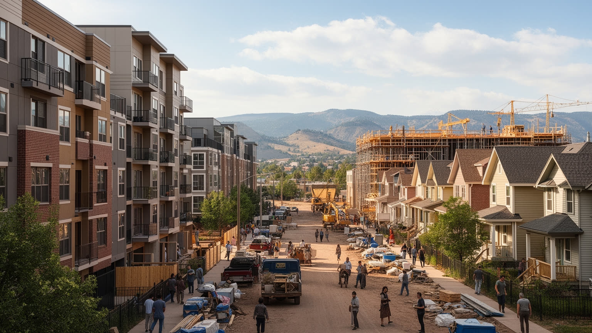
デンバーの急成長は、住宅市場を最も鋭く揺らしてきた。山に近い生活、雇用の増加、若い専門職の流入、投資、低金利期の開発は、中心部と人気地区の価格を押し上げた。古い倉庫や鉄道沿いは集合住宅、飲食店、オフィスへ変わり、歩ける地区の魅力を高めた一方、長く住んだ住民や小商店、低所得の世帯は移転を迫られやすくなった。ファイブポインツのような歴史的な黒人コミュニティや、ヒスパニック系住民の多い地区では、再開発が文化の継承と生活基盤を同時に脅かす。郊外へ移る選択は広い家を得る道でもあるが、通勤距離、自動車費用、道路混雑、水需要、学校と保育の負担を増やす。ホームレスの増加は、住宅不足、賃金、精神医療、依存症、家族関係の破綻が交差する都市問題として現れている。デンバーを住宅都市として読むには、新しいアパートの外観だけでなく、家賃補助、社会住宅、ゾーニング、空き地、シェルター、退去通知、郊外バスの本数まで見る必要がある。成長する都市が魅力を保つには、働く人、学生、高齢者、先住民や黒人、ラテン系の住民が住み続けられる場所を確保しなければならない。住まいは景観の一部である前に、地域の記憶と仕事を支える土台である。家賃の上昇を放置すれば、都市の多様さは広告の言葉だけになってしまう。学校区の差も住まい選びを左右する。
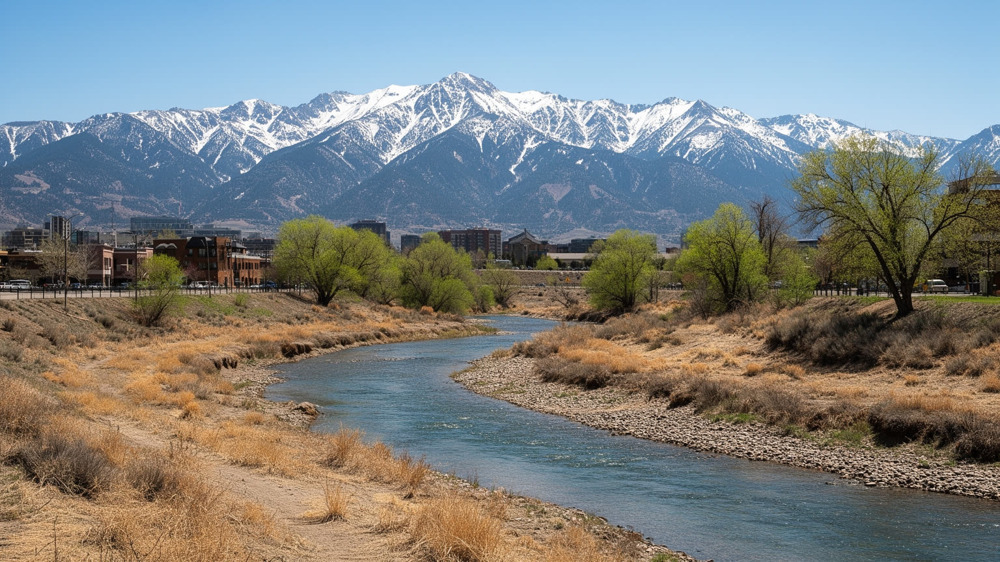
デンバーの気候は、晴天の多さと乾燥、高地の寒暖差、突然の雪、夏の強い日差しによって特徴づけられる。快適な屋外生活を支える条件は、同時に水の制約を強く意識させる。都市の水はロッキー山脈の積雪、雪解け、貯水池、導水、河川権に支えられ、サウスプラット川や周辺の流域だけで完結しない。成長する住宅地、芝生、工業、農業、レクリエーション、下流域の需要が、水配分をめぐる政治を複雑にする。気候変動で積雪の時期や量が変わり、干ばつと山火事が増えれば、都市の水道、電力、空気の質、保険、観光に影響が出る。高地の強い紫外線と熱波は、屋外労働者、高齢者、冷房の弱い住宅に負担をかける。冬の雪は美しいが、道路管理、歩道の凍結、学校休校、空港遅延をもたらす。デンバーを気候の視点で読むには、青い空の魅力だけでなく、芝生を減らす庭づくり、節水設備、山火事の煙、雪解けの変化、洪水時の排水、低所得地区の木陰不足を同じ都市政策として見る必要がある。水は成長の前提であり、将来の制約でもある。山から来る水を当然の資源と見なすのではなく、農村、先住民、下流の都市、生態系と分け合う公共財として扱えるかが問われている。乾燥地の都市計画は、開発の速度よりも水の長期的な持続性を先に考える必要がある。街路樹の少ない地区では暑さの負担も重い。
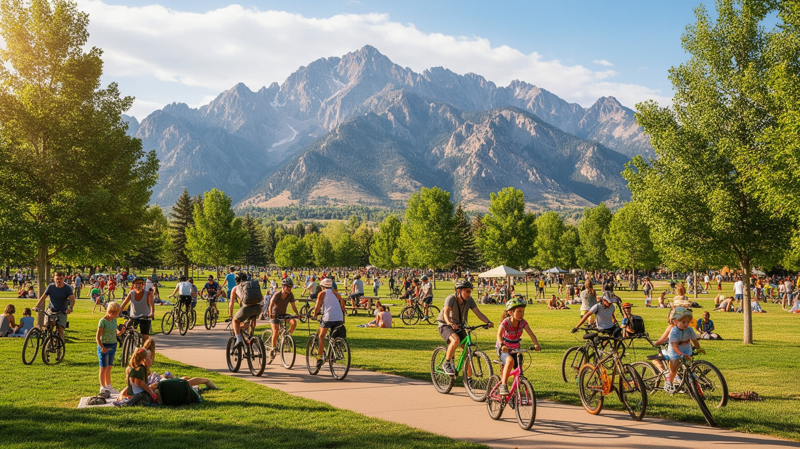
デンバーの文化を語るとき、アウトドアは単なる週末の趣味ではない。登山、スキー、スノーボード、トレイルランニング、自転車、キャンプ、釣り、ロッククライミングは、住民の自己像、企業の採用、観光、衣料や用品の小売、医療、環境教育まで広げている。都市内にも公園、川沿いの遊歩道、自転車道、スポーツ施設があり、山へ行けない日常の中でも屋外志向が暮らしに組み込まれる。レッドロックスの音楽空間、醸造所、フードホール、スポーツバーは、自然と都市文化を結びつける場所になっている。一方で、アウトドア文化は誰にでも開かれているわけではない。車、道具、リフト券、休暇、情報、体力、保険が必要で、低所得世帯や新しい移民、障害のある人には参加の壁が高い。山岳地の混雑は駐車、環境負荷、野生動物、生態系、救助体制に影響する。都市の中でも、公園の整備や木陰、自転車道の安全は地区によって差がある。デンバーをアウトドア都市として読むには、晴れた週末の明るさだけでなく、誰が山へ行けるのか、誰が公園を管理し、誰が渋滞や排出を引き受けるのかを見る必要がある。自然への近さは都市の大きな魅力だが、その魅力を公平な公共資源にできるかが問われる。スポーツと自然を楽しむ文化が、土地への敬意、気候への責任、近隣の健康づくりへつながる時、デンバーの明るい都市像はより深くなる。
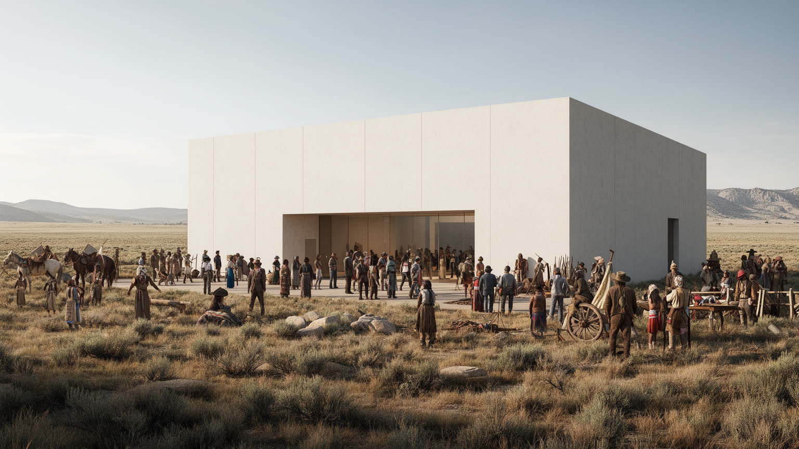
デンバーの土地を読むには、都市の成立以前からこの地域に関わってきた先住民の歴史を避けられない。シャイアン、アラパホ、ユートをはじめ、多くの部族にとって、平原、山脈、川、交易路、狩猟地、聖地は生活と記憶の場だった。ゴールドラッシュ、入植、条約違反、軍事衝突、強制移動、サンドクリークの虐殺は、州都の発展の影にある暴力を示している。現在のデンバーには先住民コミュニティ、芸術家、学生、医療支援、文化行事、博物館、土地承認の取り組みがあり、都市の公共空間に記憶を戻そうとしている。だが記憶を掲げるだけでは不十分である。住宅、医療、教育、職業、依存症支援、部族主権への尊重、文化財の返還、歴史教育の内容が問われる。観光客が西部の自由なイメージや山岳景観を楽しむ時、その土地がどのように奪われ、誰の名前が消され、どの物語が飾りとして使われてきたかを見る必要がある。デンバーを先住民の記憶から読むことは、過去を暗くするためではなく、都市の正確な地図を取り戻すためである。州議事堂、博物館、公園、学校、川沿いの地名に、先住民の存在を現在の住民として位置づけることが重要になる。土地の記憶は歴史展示だけでなく、政策と日常の関係を変える力を持つ。山と平原の美しさを語るなら、その土地に続く権利と痛みも同じ視線に置きたい。
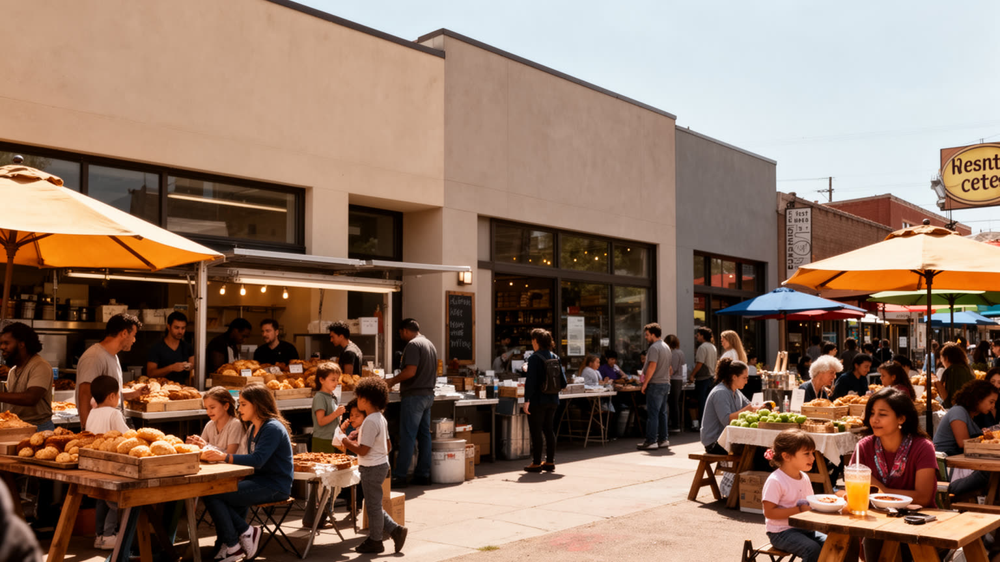
デンバーの日常は、山の眺めだけでなく、食堂、醸造所、カフェ、スーパー、ファーマーズマーケット、フードトラック、学校帰りの店先にある。メキシコ料理と南西部の味、チリ、タコス、ブリトー、クラフトビール、コーヒー、植物性の食、移民の食文化が混ざり、都市の食は軽やかに変化している。醸造所やフードホールは、若い専門職や観光客を引き寄せる一方、古くからの近隣食堂や家族経営の店も、地区の記憶を保つ大切な場である。飲食業は雇用を生むが、家賃、賃金、チップ、季節需要、仕入れ価格、人手不足に左右されやすい。成長地区では新しい店が都市の魅力を上げる一方、価格が上がり、長く住む住民が使いにくい場所になることもある。食は観光資源である前に、移民の起業、家族の送金、地域の会話、スポーツ観戦、宗教行事、学校の給食と結びつく。デンバーを食の視点で読むには、人気の醸造所だけでなく、早朝に厨房を開ける人、郊外から通うサーバー、食料不安を抱える世帯、フードバンク、健康的な食品を買いにくい地区を見る必要がある。日常の食卓は、所得差、移民、住宅、交通、文化の接点である。気軽に集まれる店が残れば、都市は消費の舞台ではなく近隣の居場所であり続ける。山へ行く前の朝食から試合後の一杯まで、食の時間は街の関係を静かにつないでいる。昼の弁当や市場の買い物にも近隣の記憶が宿る。
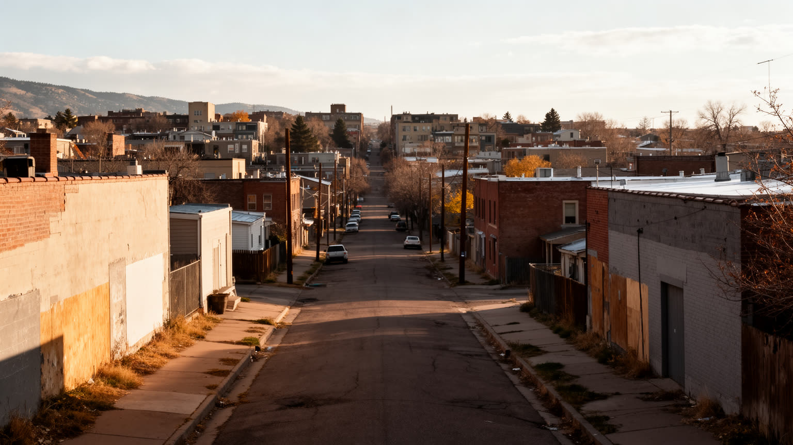
デンバーの成長は明るい都市像を作ったが、近隣ごとの差もはっきりさせた。高所得の専門職が集まる地区、再開発で変わる倉庫街、歴史的な黒人コミュニティ、ヒスパニック系の住宅地、移民の商店街、郊外の低所得地域では、学校、木陰、交通、医療、食料、治安へのアクセスが異なる。ファイブポインツはジャズや黒人文化の記憶を持つ一方、地価上昇と移転圧力によって、記憶の場所が商業的な装飾へ変わる危険もある。ホームレスの可視化は、住宅費、精神医療、薬物依存、刑事司法、雇用、家族支援が重なる問題であり、単に中心部の景観管理では解けない。近年のオピオイドや合成薬物の問題も、医療、警察、福祉、シェルター、近隣住民の不安を複雑に結びつける。成長する都市では、公共投資がどの地区へ届くかが重要になる。公園の整備、バス路線、歩道、図書館、学校、低価格住宅、商店支援は、見えにくいが都市の公平性を作る基礎である。デンバーを格差の視点で読むには、スカイラインや新しいレストランだけでなく、退去を迫られる家族、夜の避難場所を探す人、通学路の安全、古い教会や地域団体の支援を見る必要がある。都市の魅力は、弱い立場の人を中心から追い出すことで保たれるものではない。成長の利益を近隣へ戻し、歴史ある地区の声を計画に反映できるかが、デンバーの信頼を決める。
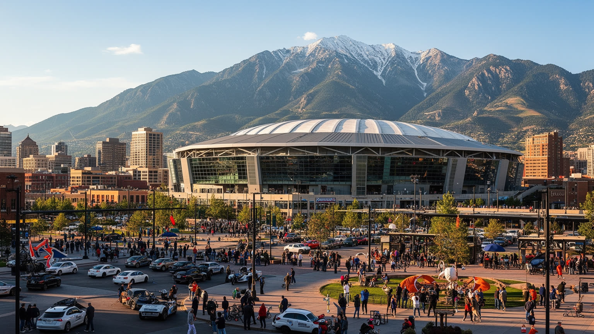
デンバー観光は、都市と山岳の組み合わせによって成り立つ。訪問者はダウンタウン、州議事堂、美術館、歴史博物館、ユニオン駅、クアーズ・フィールド、アリーナ、醸造所を巡り、そこからレッドロックス、ロッキー山脈、スキー場、国立公園方面へ向かう。スポーツは都市の重要な公共文化であり、野球、アメリカンフットボール、バスケットボール、アイスホッケー、サッカーが、郊外住民と中心部を結びつける日を作る。試合やコンサートはホテル、飲食、交通、警備、清掃、屋台、配車サービスの労働を動かす一方、混雑、価格上昇、騒音、駐車、公共安全の課題も生む。山岳観光は都市のブランドを強めるが、休日の道路混雑、環境負荷、雪不足、山火事の煙、救助体制、山地コミュニティの住宅問題とつながっている。観光客が感じる自由な空気は、広い空と山の景色だけでなく、空港、レンタカー、道路、ホテル、サービス労働者、案内情報に支えられる。デンバーを観光都市として読むには、華やかな試合や美しい夕景だけでなく、イベント後に清掃する人、夜遅く郊外へ帰る従業員、山の町で家賃に悩む住民、自然保護のルールを見る必要がある。観光とスポーツは都市に誇りと収入をもたらすが、それを生活の質へ戻せなければ、訪問者の楽しさと住民の負担がずれていく。歓声の裏にある移動と労働を含めてこそ、デンバーの賑わいは持続する。
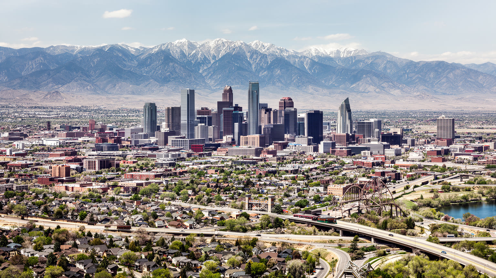
デンバーを読むことは、山を望む明るい都市像と、乾燥地で成長する都市の制約を重ねることである。ロッキー山脈は景観、観光、アウトドア文化を与えるが、水、火災、雪、交通、土地の記憶という現実も運ぶ。州都としての制度、エネルギー政策、テックと航空の産業、広大な空港は、デンバーを山岳州の結節点にしている。一方で、急速な人口流入と高所得職の増加は、住宅費を押し上げ、黒人、ヒスパニック、先住民、低所得者、若い家族、サービス労働者の居場所を狭める。文化面では、先住民の歴史、ヒスパニックの生活、スポーツ、音楽、醸造所、アウトドアが重なり、都市の魅力を作る。だが魅力を消費するだけでは、土地の暴力や再開発の痛みは見えない。デンバーの重要性は、単に山に近い豊かな街であることではなく、資源依存からの転換、水の分配、住宅の公平性、気候リスク、広域交通を同時に試されている点にある。訪れる人は晴れた空と山の線に惹かれるが、住む人は家賃、通勤、雪、乾燥、医療、学校、近隣の記憶とともに暮らす。高地の都市が未来を開くには、成長を速さだけで測らず、誰が水を使い、誰が中心に住み、誰の歴史が語られるかを問い続ける必要がある。その問いの中に、デンバーの本当の都市性がある。空港から山へ向かう短い旅の間にも、倉庫、住宅地、川、公園、シェルターが現れ、都市の明るさと不均衡を同時に示す。